قبل أن تبدأ
«مدرّبون سعوديّون» منصة تعرّف بالمدربين السعوديين وتضعهم أمام الجهات التي تبحث عنهم: شركات، وجامعات، وجهات حكومية، ومراكز تدريب. لا تتوسط المنصة في عقودك ولا تأخذ منها عمولة. دورها أن تجعلك مرئياً بشكل مرتب وموثوق، وأن تصلك الطلبات والفرص بدل أن تبحث عنها وحدك.
ما تقدمه لك يمكن تلخيصه في ثلاثة أشياء:
بطاقة تعريفية وصفحة باسمك وملف PDF لسيرتك، تتحدث كلها حين تعدّل بياناتك مرة واحدة.
طلبات مباشرة من صفحتك، وطلبات عامة تعيد الإدارة توجيهها، وفرص ووظائف تدريب تُجمع من مصادرها.
توصيات معتمدة، ونماذج فيديو، ومكتبة قوالب، وإحصاءات تعرف منها أثر ظهورك.
التسجيل حصري للمدربين السعوديين، فتظهر بين أقرانك لا بين آلاف الحسابات العامة.
يمشي الدليل خلف الترتيب نفسه الذي ستعيشه: نبدأ بما يحدث عند الجهة التي تبحث عن مدرب، ثم نفتح صفحتك ولوحتك، وننتهي بخطوات عملية ترفع احتمال أن يتحول الاهتمام إلى عقد.
رحلة الزائر: كيف تصل إليك الجهات
الزائر عادة مسؤول تدريب أو موارد بشرية أو مدير إدارة عنده برنامج يريد تنفيذه، ولا يعرف بعد من يناسبه. أمامه أربعة مداخل، وكلها تنتهي عند بطاقتك وصفحتك.
1. البحث من الصفحة الرئيسية
في أعلى الرئيسية مربع بحث واحد يقبل اسم مدرب أو موضوعاً أو تخصصاً، مع اختيار المنطقة. وتحته اقتراحات للتخصصات الأكثر طلباً، وخريطة للمملكة تعرض عدد المدربين في كل منطقة؛ الضغط على منطقة يعرض مدربيها.
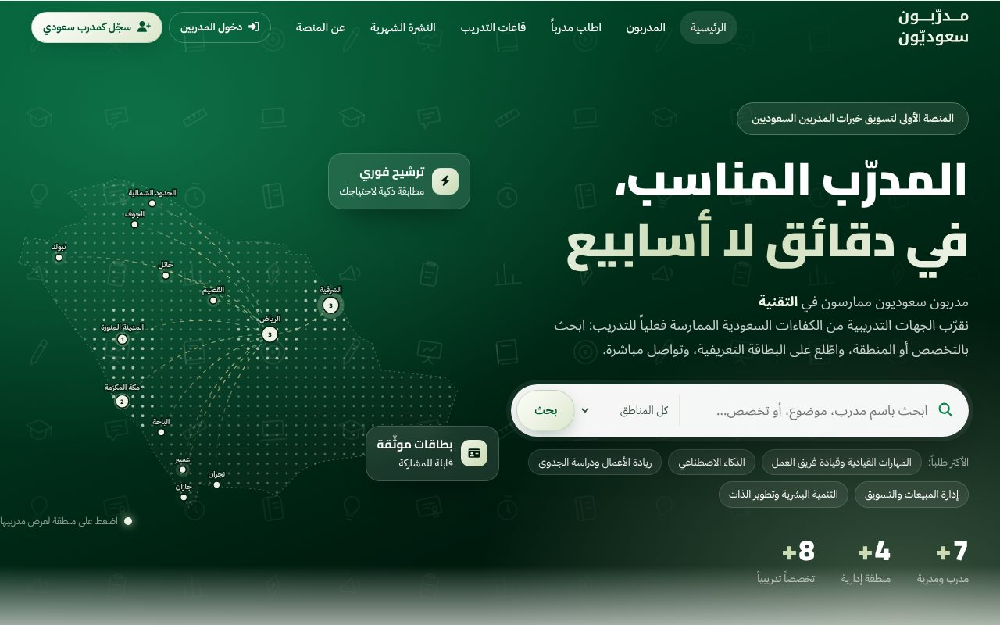
ما يعنيه هذا لك: كلمات البحث تُقارن ببياناتك، فكلما كان لقبك المهني وتخصصاتك وعناوين دوراتك محددة، ظهرت في نتائج أدق.
2. دليل المدربين
صفحة «المدربون» تعرض كل البطاقات مع مرشّحات: كلمة بحث، والمنطقة، والتخصص، وطريقة التقديم (حضوري أو عن بُعد)، ومدرب أو مدربة. يرى الزائر في كل بطاقة الاسم والمسمى والمنطقة وسنوات الخبرة وأبرز التخصصات، ثم يفتح البطاقة كاملة.
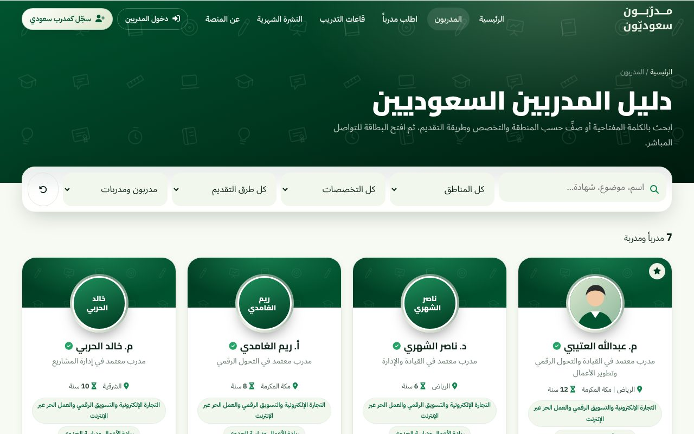
3. «اطلب مدرباً»
للجهة التي لا تعرف من تختار. تصف احتياجها: التخصص، والمنطقة، وموضوع البرنامج، ولغة التدريب، وعدد المتدربين، وطريقة التقديم، والموعد. وأثناء الكتابة تظهر لها ترشيحات فورية من المدربين الأنسب. بعد الإرسال يراجع فريق المنصة الطلب ويرشّح المدربين، ويمكن أن يُعاد توجيهه لكل المدربين المسجلين، فيصلك في تبويب «طلبات عامة» مع بيانات الجهة وملاحظة الإدارة.
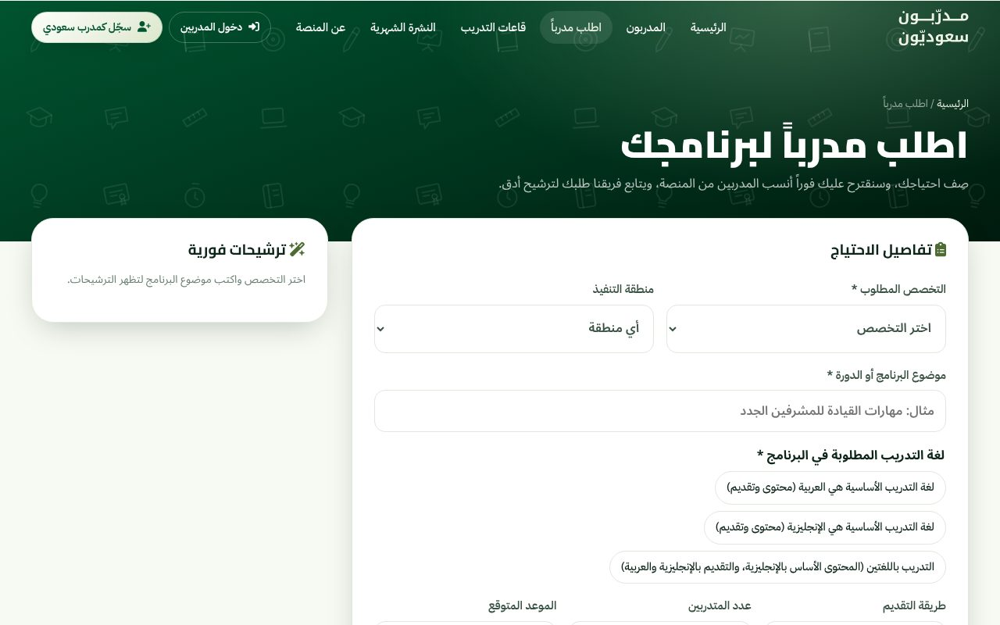
لهذا المدخل نتيجتان لك: قد تظهر بطاقتك في الترشيحات الفورية إذا طابق تخصصك ومنطقتك وموضوعك الطلب، وقد يصلك الطلب نفسه فتتقدم له بنفسك.
4. الرابط المباشر وما تشاركه أنت
لصفحتك رابط خاص باسمك (يُبنى من اسمك ويبقى القديم يعمل إن غيّرته). تضعه في توقيع بريدك وسيرتك وحساباتك المهنية، وترسله لمن طلب سيرتك. ومن صفحتك وبطاقتك تُنزَّل صور جاهزة بثلاثة مقاسات (منشور 4:5، قصة 9:16، عرضي 16:9) وفيها رمز QR يفتح صفحتك. وهذا المدخل وحده كثيراً ما يكون الأقوى، لأن من يصل إليه وصل بتوصية منك لا بالبحث.
وصفحات المدربين مهيّأة للفهرسة في محركات البحث، فقد يصلها زائر من نتائج البحث عن اسمك أو عن تخصصك في منطقتك.
ماذا يفعل الزائر قبل أن يتواصل؟
من واقع ما يفعله من يختار مدرباً: يقرأ المسمى والنبذة، ثم ينظر في الأرقام (الخبرة والساعات والبرامج)، ثم يبحث عما يطمئنه: توصيات من جهات أخرى، وفيديو يرى فيه طريقة التقديم، وعناوين دورات سبق تقديمها، وشهادات واعتمادات. فإذا اطمأن ضغط «تواصل مع المدرب» أو حمّل ملف PDF ليعرضه على لجنة أو مديره. وكل ما سبق تتحكم أنت فيه من لوحتك.
صفحتك العامة كما يراها الزائر
صفحتك هي الوجه الذي تُحاسَب عليه، فتأمل ترتيبها: في اليمين نبذتك وتخصصاتك وما تقدمه من أنشطة وفيديوهات وتوصيات، وفي اليسار بطاقتك التعريفية وأزرار الفعل.
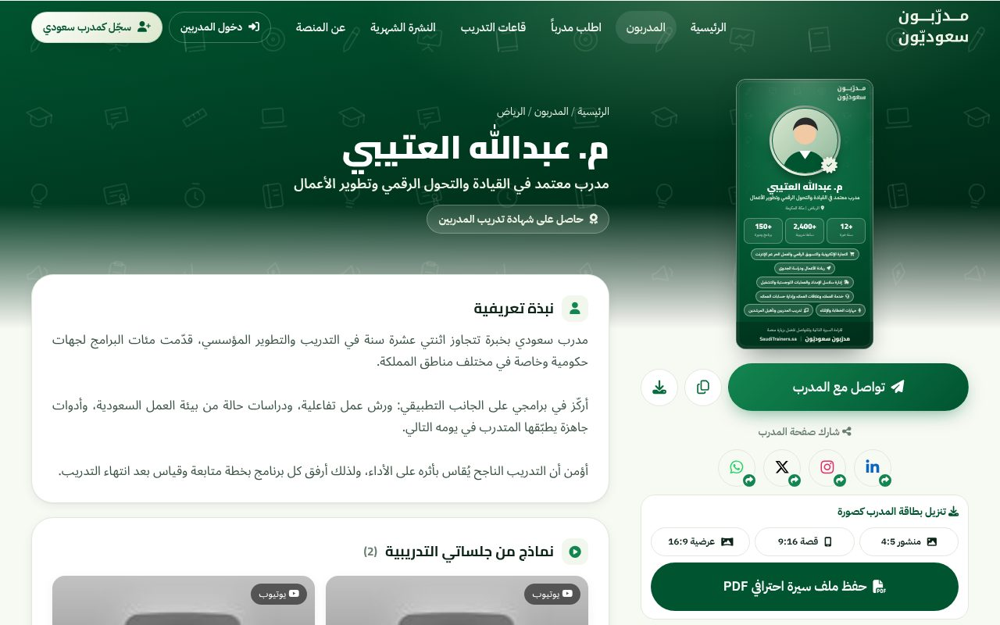
| العنصر | ما فائدته للزائر، وما دورك فيه |
|---|---|
| البطاقة التعريفية | ملخص بصري في ثوانٍ: الاسم، والمسمى، والمنطقة، وثلاثة أرقام، وأبرز تخصصاتك. تختار أنت لونها من ألوان الهوية. |
| النبذة التعريفية | أول نص يقرؤه. فيه تُقنع أو تُفقد الاهتمام. (نصائح كتابتها في قسم العقود أدناه.) |
| التخصصات والمواضيع | تحدد في أي نتائج تظهر، وتُظهر للقارئ هل ما يحتاجه داخل نطاقك. |
| الشهادات والجهات | الاعتمادات وعضويات الهيئات والجهات التي عملت معها. وهي من أسرع ما يرفع الثقة. |
| نماذج من جلساتي | روابط فيديو (يوتيوب وغيره) تُشغَّل داخل صفحتك دون أن يغادرها الزائر. |
| توصيات الجهات | آراء من تعاملوا معك، تظهر باعتمادك أنت فقط. |
| مدربون في تخصصات مشابهة | يظهر أسفل الصفحة. وجوده يدعو لأن تكون صفحتك مكتملة أكثر من جيرانك. |
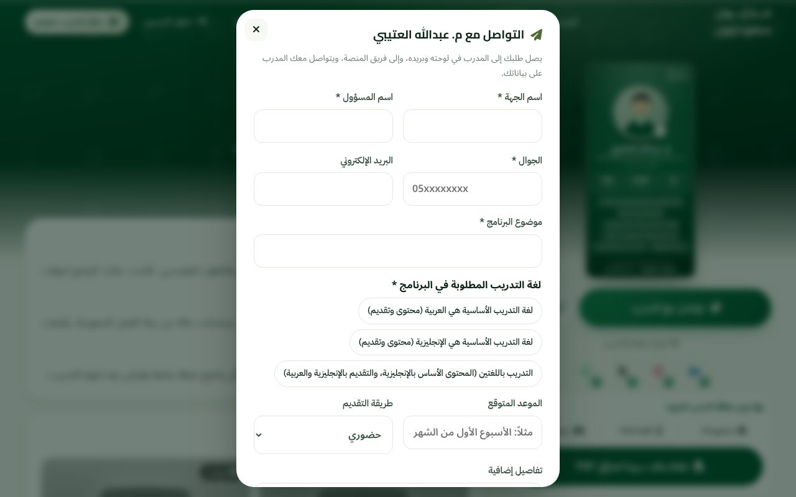
جوالك وبريدك لا يظهران للزائر. حين يضغط الزائر «تواصل» ويرسل طلبه يصلك في لوحتك وعلى بريدك، وتنبيه على جوالك إن فعّلت الإشعارات، وتتصل أنت بالجهة على رقمها.
رحلتك أنت: من التسجيل إلى الاشتراك الكامل
- طلب التسجيل. من صفحة «سجّل كمدرب سعودي». المتطلبات: الجنسية السعودية، وحضور دورة واحدة على الأقل في إعداد المدربين أو وجود خبرة تدريبية في المجال المختار. الطلب خمس خطوات: البيانات، ثم التخصص، ثم الخبرة، ثم الصورة والتصميم (وهذه الأخيرة اختيارية ويمكن تأجيلها)، ثم المراجعة. ترى بطاقتك تتشكل أمامك أثناء التعبئة، ويُحفظ تقدّمك على جهازك. ولا يُطلب سداد في هذه المرحلة.
- المراجعة. يراجع الفريق طلبك. تتابع حالته من صفحة «متابعة الطلب» بإدخال رقم الطلب، وتصلك رسائل على بريدك عند استلام الطلب وعند قبوله.
- القبول المبدئي والشهر المجاني. عند القبول المبدئي يُفعَّل حسابك تلقائياً لمدة شهر كامل. يصلك رمز دخول بالشكل ST0000-XXXXXX وتظهر بطاقتك للزوار، وتجرّب البطاقة واللوحة وطلبات الجهات.
- تأكيد الاشتراك. قبل نهاية الشهر تؤكد رغبتك بسداد رسوم السنة الأولى (720 ريالاً، أو الرسوم المعلنة وقت الاشتراك)، ثم يتجدد الاشتراك مجاناً بشكل تلقائي مدى الحياة وبلا أي عمولة على عقودك. بعد التأكيد يفتح لك القبول النهائي كل المزايا.
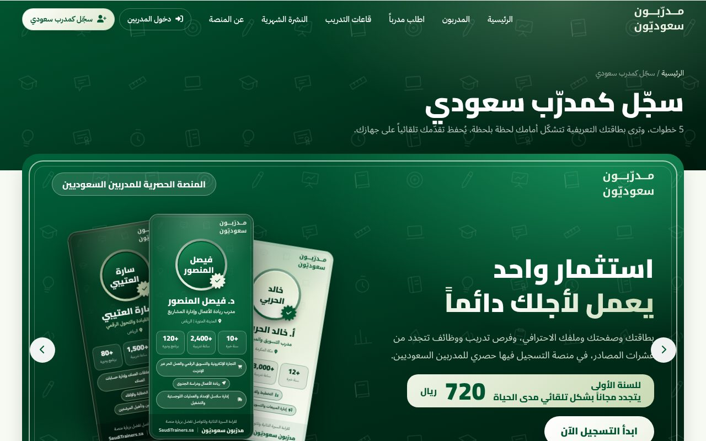
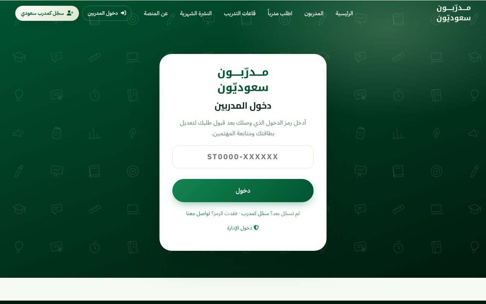
ماذا يتاح في الشهر المجاني وماذا ينتظر الاشتراك؟
| الميزة | الشهر المجاني | بعد تأكيد الاشتراك |
|---|---|---|
| البطاقة والصفحة العامة وظهورك في الدليل والبحث | متاحة | متاحة |
| لوحة التحكم وتعديل البيانات | متاحة | متاحة |
| طلبات التواصل المباشرة وطلبات الجهات | متاحة | متاحة |
| التوصيات والفيديوهات والإحصاءات والتنبيهات | متاحة | متاحة |
| النشر في السوشيال ميديا ونصوص المشاركة الجاهزة | حصرية للمشتركين | متاحة |
| ملف السيرة الاحترافي PDF | حصرية للمشتركين | متاحة |
| تثبيت بطاقتك في الواجهة الرئيسية | حصرية للمشتركين | متاحة |
| مكتبة المدرب | حصرية للمشتركين | متاحة |
| وظائف التدريب | حصرية للمشتركين | متاحة |
| كتابة الأخبار والإنجازات ونشرها | حصرية للمشتركين | متاحة |
تظهر الميزات المقفلة خلال التجربة باهتة في حسابك. عند الضغط عليها ترى فكرتها وفائدتها دون أن تفقد شيئاً. وقبل انتهاء الشهر بخمسة أيام ثم بيومين يصلك تذكير على بريدك. إن انتهى الشهر دون تأكيد يتعطل الدخول ويُخفى ملفك من المنصة، وتبقى بياناتك محفوظة ولا تُحذف، وتعود فور تأكيد اشتراكك.
تفاصيل الشروط كاملة في اتفاقية الاستخدام، ومنها أن رسوم الاشتراك غير قابلة للاسترجاع.
لوحة التحكم، تبويباً تبويباً
تفتح اللوحة بعد الدخول، وتجد القائمة الجانبية على اليمين: بطاقتي، وتعديل البيانات، وطلبات موجهة لك، وطلبات عامة، ووظائف التدريب، ونماذج الفيديو، ومكتبة المدرب، ومراجعات وتوصيات. وقد يظهر تبويبان آخران، «أخباري» و«إعلانات»، إذا فعّلتهما الإدارة. على الجوال تعمل اللوحة بالطريقة نفسها.
بطاقتي: الصفحة الرئيسية للوحة
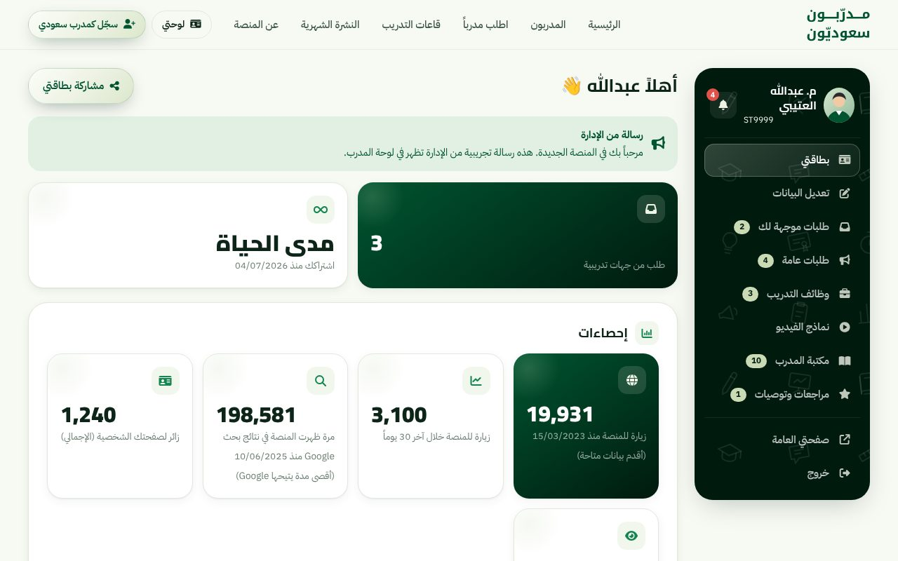
- اكتمال الصفحة. شريط يوضح ما ينقص صفحتك (روابط الفيديو، التوصيات، وغيرها) مع زر لكل عنصر يأخذك مباشرة إليه. هدفه الوصول إلى 100%.
- رسالة من الإدارة. إن كتبت لك الإدارة ملاحظة تظهر في أعلى الصفحة.
- مؤشرات سريعة. عدد الطلبات التي وصلتك من الجهات، وحالة اشتراكك (الأيام المتبقية في التجربة أو «مدى الحياة»).
- إحصاءات. عدد زوار صفحتك خلال آخر 30 يوماً وإجماليهم، وأرقام المنصة العامة مثل الزيارات وظهور المنصة في نتائج البحث. بها تعرف أثر ما تنشره: انشر رابط صفحتك ثم راقب هل ارتفع العدد.
- صور جاهزة للمشاركة. منشور 4:5 وقصة 9:16 وعرضي 16:9 بتصميم بطاقتك، وفيها رمز QR لصفحتك، وزر لنسخ الرابط.
- لون بطاقتي. تختار من ألوان الهوية، ويُحفظ اختيارك فوراً ويتغير في بطاقتك وصورك وملف PDF.
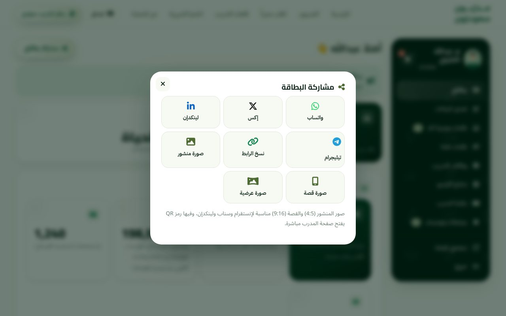
تعديل البيانات
هنا تبني ملفك. يعرض النموذج بياناتك على اليمين وبطاقتك على اليسار تتغير معك لحظة بلحظة، فترى أثر كل كلمة. التعديلات تظهر للزوار فور الحفظ.
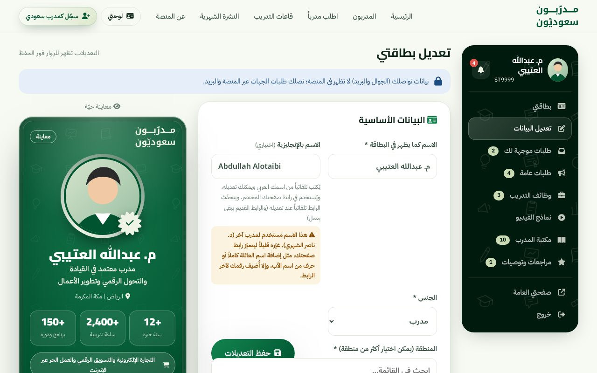
الحقول التي ستعمل عليها:
- الاسم واللقب كما تحب أن يظهر (أ. أو م. أو د.)، والاسم بالإنجليزية اختيارياً. رابط صفحتك يُبنى من الاسم، فإن وُجد مدرب باسمك نفسه نبّهتك اللوحة لتضيف ما يميّز رابطك.
- المنطقة والمدينة، ويمكنك اختيار أكثر من منطقة، ومعها خيار «مستعد للسفر».
- اللقب المهني وهو السطر الذي يظهر تحت اسمك. اجعله محدداً.
- مجالات التدريب حتى حد معين، تحدد أين تظهر.
- طريقة التقديم (حضوري أو عن بُعد)، ولغة التدريب.
- الخبرة: سنوات الخبرة والساعات التدريبية وعدد البرامج، وتظهر في البطاقة كأرقام بارزة، فاكتب ما تستطيع إثباته.
- عناوين دورات قدّمتها، والشهادات والاعتمادات، والجهات التي تعاونت معها، وشهادات احترافية تدرّب عليها إن وُجدت، وشهادة تدريب المدربين.
- النبذة والصورة الشخصية (برابط مشاركة من Google Drive أو أي تخزين سحابي، وتضبط موضعها داخل الدائرة).
بيانات التواصل (الجوال والبريد) تُعرض في اللوحة محمية، ولا تظهر في صفحتك العامة.
طلبات موجهة لك
كل طلب أرسلته جهة من زر «تواصل مع المدرب» في صفحتك. يظهر باسم الجهة والمسؤول وموضوع البرنامج واللغة والموعد وطريقة التقديم وتفاصيل إضافية، مع أزرار للتواصل بواتساب أو بريد، وزر «تم» لتعليم الطلب بعد متابعته. كذلك يصلك الطلب على بريدك مباشرة، ويصلك إشعار على جوالك.
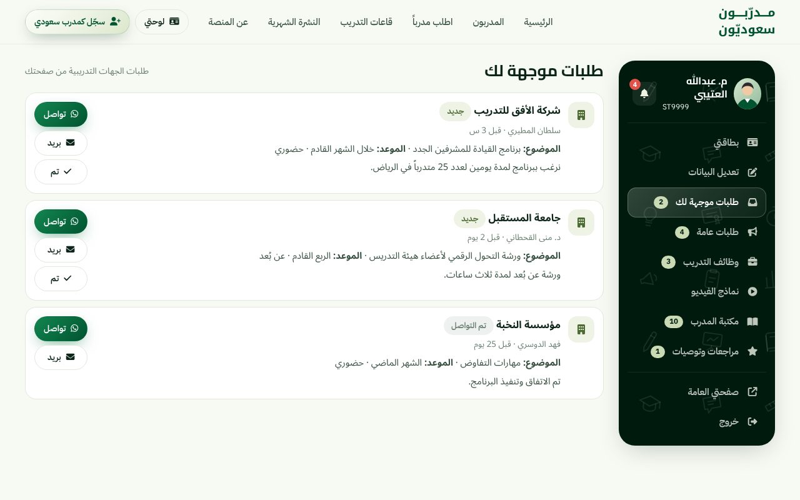
طلبات عامة
هنا ما لا يخصك وحدك: طلبات الجهات التي تعيد الإدارة توجيهها لكل المدربين المسجلين (مع ملاحظة الإدارة وبيانات التواصل بالجهة عند توفرها)، وإعلانات ومنافسات تنشرها الإدارة من محتوى الإنترنت. الترتيب حسب الشهر، وتستطيع التصفية بين «طلبات عبر الموقع» و«من محتوى الإنترنت». ويبقى كل شيء محفوظاً بعد انتهاء موعده لتعود إليه.
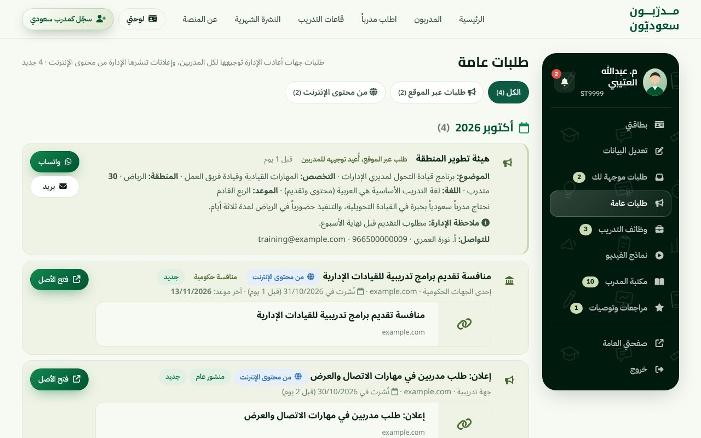
التقدم لهذه الطلبات يكون من عندك مباشرة إلى الجهة؛ المنصة لا تقدّم عنك. لذلك جهّز عرضاً مختصراً قابلاً للتعديل، وسيرتك PDF من اللوحة، حتى لا تبدأ من الصفر في كل مرة.
وظائف التدريب
تجمع المنصة وظائف المدربين وفرص العمل التدريبية من عشرات المصادر العامة على الإنترنت وتضعها في لوحتك، مع شهر حالي ظاهر وأرشيف شهري لما قبله. لكل وظيفة اسم الجهة والمدينة وتاريخ الإضافة وما تبقى من أيام، وزر يفتحها في مصدرها الأصلي. ويمكن تنزيل ما اجتمع بصيغة CSV.
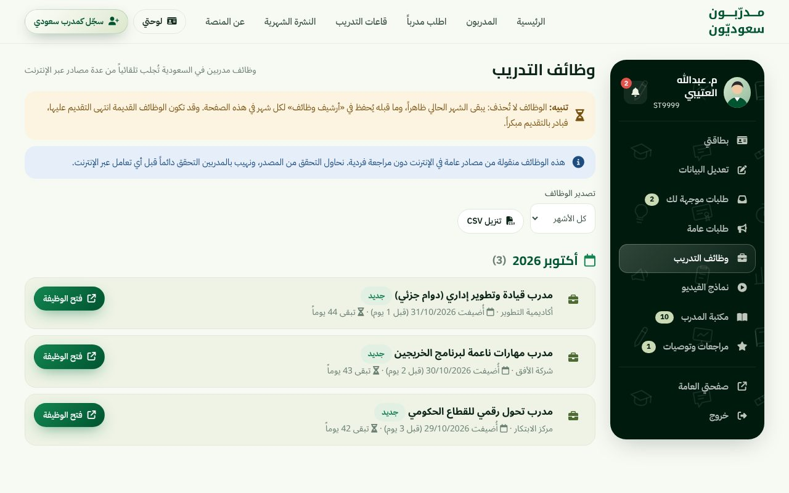
نماذج الفيديو
أضف رابط أي مقطع من جلساتك (يوتيوب، فيميو، تيك توك، إنستقرام، فيسبوك، إكس، دايلي موشن، ملف مشارك في Google Drive، أو ملف mp4 مباشر). يظهر في صفحتك بمعاينته وتُشغَّل داخل الصفحة. يُجلب العنوان تلقائياً إن تركته فارغاً، ويمكنك تعديله وإعادة ترتيب المقاطع وحذفها.
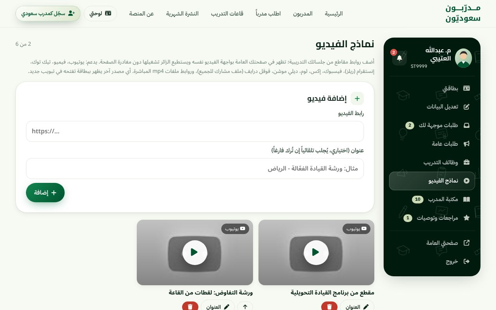
مكتبة المدرب
مجموعة قوالب وأدلة عملية لكل مرحلة من برنامجك: قبل البرنامج (عروض الأسعار والعقود وتصميم الجلسات وقوائم التحقق)، وأثناء التنفيذ (الأنشطة وأسئلة التفاعل وإدارة القاعة)، وبعد التنفيذ (التقييم والتقرير والمتابعة). تبحث بالكلمة، وتصفّي حسب المرحلة أو النوع، وتضع ما يعجبك في «مفضلتي»، ثم تنسخ القالب أو تنزّله Word وتعدّله. وإن احتجت مورداً غير موجود فزر «اقترح مورداً» يرسل اقتراحك للإدارة.
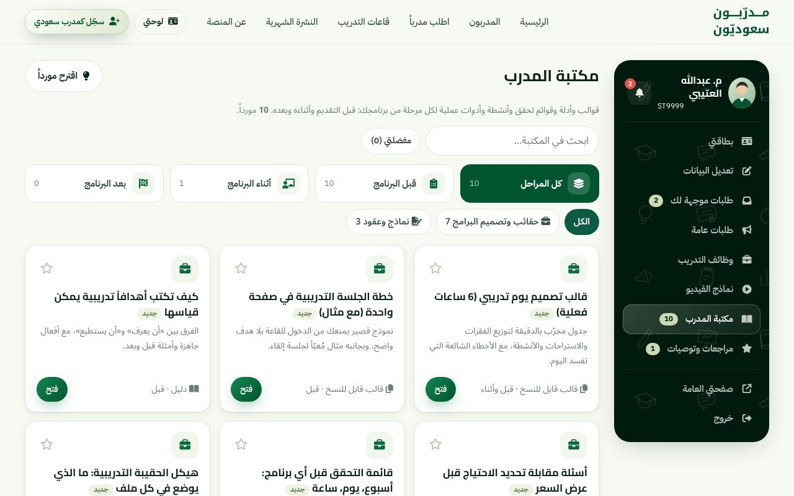
أثرها على العقود غير مباشر لكنه حقيقي: عرض سعر مرتّب وعقد واضح وتقرير ختامي منظم تعطي الجهة انطباعاً بأنك محترف، وتزيد فرصة التجديد والإحالة.
مراجعات وتوصيات
التوصية أقوى دليل تضعه أمام جهة جديدة. من هذا التبويب تفعل إحدى ثلاث: «اطلب توصية برابط» فتنشئ رابطاً خاصاً ترسله لجهة أو زميل ليكتب توصيته دون حساب، و«أضف توصية» لتدخل بنفسك رأياً قيل فيك، ثم تراجع ما وصلك وتعتمد ما تريده. ما تعتمده وحده يظهر في صفحتك العامة، وبيانات تواصل كاتب التوصية الاختيارية لا يراها إلا أنت والإدارة.
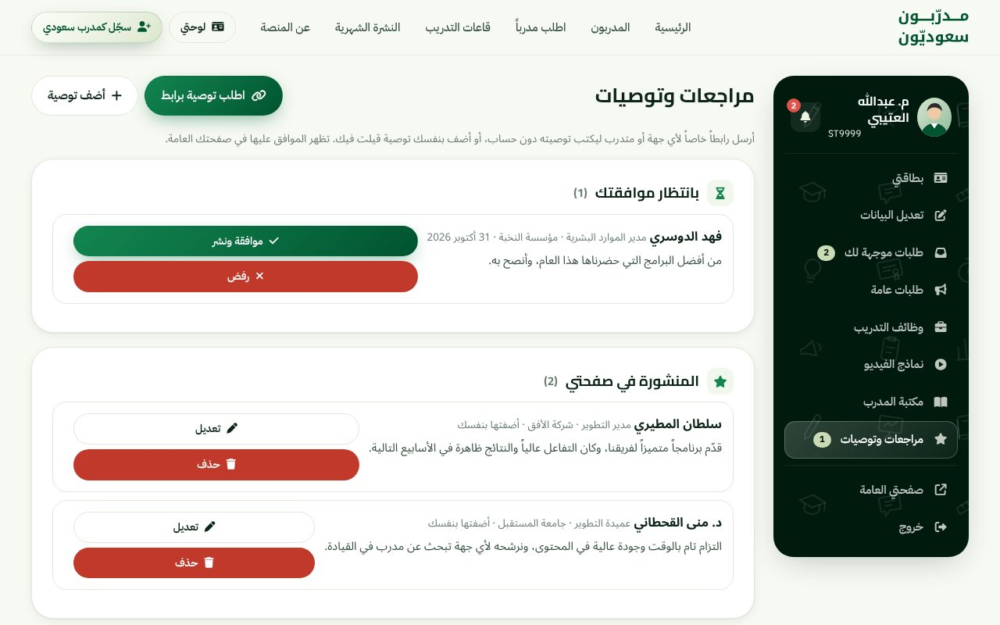
الإشعارات وتثبيت المنصة على جوالك
أيقونة الجرس في رأس القائمة تجمع الجديد: طلبات التواصل، والطلبات العامة، والفرص، وإشعارات الموقع مثل اختيار بطاقتك للتثبيت في الواجهة. وتستطيع تفعيل تنبيهات الجوال ليصلك الجديد دون أن تفتح الموقع، ويظهر عدّاد على أيقونة المنصة بما لم تطّلع عليه. على أجهزة آيفون يلزم أولاً إضافة المنصة إلى الشاشة الرئيسية من قائمة المشاركة في المتصفح، ثم تفعيل التنبيهات.
أخباري والإعلانات
إن فُعّل لك تبويب «أخباري» فبه تنشر أخبارك ودوراتك القادمة وإنجازاتك، فتظهر في الصفحة الرئيسية وصفحتك وفي نشرة المدربين الأسبوعية، وتُصدَّر صوراً للسوشيال. أما «إعلانات» فهي إعلانات المنصة نفسها للمدربين.
صفحتي العامة وخروج
زر «صفحتي العامة» في أسفل القائمة يفتح صفحتك كما يراها الزائر. افتحه بعد كل تعديل كبير. وأفضل وسيلة لاكتشاف ما ينقصها أن تقرأها كأنك مدير تدريب لا يعرفك.
من الزيارة إلى العقد
المنصة تضعك أمام الجهة، وما يحوّل اهتمامها إلى عقد هو ما تعرضه أنت. هذه الأمور تنفع في أغلب الحالات.
اكتب نبذة تُقرأ
اكتبها في ثلاث فقرات قصيرة: من أنت وما مجالك وخبرتك بأرقام، وما طريقتك في التدريب، وكيف تقيس أثر برامجك. قارن:
الثانية تقول ما يفعله المدرب فعلاً وتعطي الجهة سبباً للثقة. والعبارات العامة التي تصلح لكل المدربين لا تفرّقك عن أحد.
اجعل لقبك المهني محدداً
«مدرب معتمد في القيادة والتحول الرقمي» يعمل أفضل من «مدرب ومستشار ومطوّر». السطر الذي تحت اسمك يُقرأ في نتائج البحث قبل أي شيء آخر.
أرقام تستطيع إثباتها
سنوات الخبرة والساعات والبرامج تظهر في البطاقة بخط كبير، وقد تُسأل عنها في أول اتصال. اكتب الصادق منها، ثم حدّثها كل فترة حين تنفذ برامج جديدة، فالرقم الذي يرتفع مع الوقت يدل على نشاط.
ابنِ الثقة بثلاثة أشياء
- ثلاث توصيات على الأقل من جهات مختلفة، مع ذكر الوظيفة والجهة. اطلبها فور انتهاء البرنامج، لا بعد أشهر.
- مقطعا فيديو من جلسات حقيقية.
- عناوين دورات محددة قدّمتها، لا مجرد أسماء مجالات.
رد على الطلب كأنه عقد محتمل
أول رد يحدد الانطباع. جرّب هذا الهيكل، وعدّله بلسانك:
تقدّم للطلبات العامة والفرص مبكراً
الطلب العام يصل لكل المدربين في وقت واحد. من يتقدم بعرض مرتب خلال يوم أو يومين أوفر حظاً. اجعل لك ملف عرض جاهزاً، وسيرتك من اللوحة، وقالب عرض السعر من مكتبة المدرب.
انشر رابطك، وحدّث ما تنشره
صفحة مكتملة لا يراها أحد لا تحقق شيئاً. ضع الرابط في توقيع بريدك، وفي سيرتك، وحساباتك المهنية، وأرسله مع كل عرض. وبعد كل برنامج مهم أضف توصية أو مقطعاً أو رقماً جديداً. وراقب إحصاءات زوار صفحتك: إن ارتفعت بعد نشر معين فكرر ما نجح.
تجنّب هذه الأخطاء
- اختيار كل التخصصات المتاحة. ستظهر في كل مكان لكن دون إقناع.
- نبذة قصيرة عامة، أو منسوخة من مصدر آخر.
- صورة غير واضحة أو بإضاءة ضعيفة. الصورة أول ما تراه العين.
- إهمال الطلبات الجديدة أياماً. تأخر الرد يعني فرصة ضائعة غالباً.
- ترك الصفحة دون تحديث لأشهر.
خطة أسبوعك الأول
| اليوم | ما تنجزه |
|---|---|
| الأول | ادخل برمز الدخول، وأكمل بيانات «تعديل البيانات»، وراجع بطاقتك في المعاينة الحية، وأضف صورة واضحة. |
| الثاني | أعد كتابة النبذة واللقب المهني، وأضف عناوين الدورات والشهادات والجهات التي عملت معها. |
| الثالث | أضف مقطعي فيديو، وأرسل رابط التوصية لثلاث جهات سبق أن تعاملت معها. |
| الرابع | اطّلع على «طلبات عامة» و«وظائف التدريب»، وتقدّم لما يناسبك، وجرّب تفعيل التنبيهات على جوالك. |
| الخامس | شارك بطاقتك على حساباتك المهنية، وضع رابط صفحتك في توقيع بريدك. |
| السادس | اعتمد التوصيات التي وصلتك، وتصفح مكتبة المدرب وانقل لنفسك قالب عرض سعر وعقد. |
| السابع | راجع صفحتك من «صفحتي العامة» كأنك زائر، وانظر الإحصاءات، وقرر هل تؤكد الاشتراك قبل نهاية الشهر المجاني. |
أسئلة متكررة
هل تأخذ المنصة عمولة من عقودي؟
لا. ما تحصل عليه عبر المنصة لك كاملاً. الرسوم هي رسوم الاشتراك فقط، وتُدفع في السنة الأولى ثم يتجدد الاشتراك مجاناً.
هل يظهر رقم جوالي وبريدي للزوار؟
لا. يصل الطلب إلى لوحتك وبريدك، وتتواصل أنت مع الجهة على بياناتها.
هل أستطيع تغيير بياناتي بعد القبول؟
نعم، متى شئت من «تعديل البيانات»، وتظهر التعديلات للزوار فور الحفظ. وبعض الحقول، كالجوال والبريد والتخصصات، قد تحتاج التواصل مع الإدارة لتغييرها.
نسيت رمز الدخول، ماذا أفعل؟
تواصل مع الإدارة من صفحة «عن المنصة»، وسيُعاد لك الرمز.
متى تظهر بطاقتي للزوار؟
من القبول المبدئي. وإن انتهى الشهر المجاني دون تأكيد الاشتراك يُخفى ملفك مؤقتاً، وتعود بطاقتك فور التأكيد.
لماذا لا أرى بعض التبويبات أو أراها باهتة؟
بعضها (مكتبة المدرب، ووظائف التدريب، وكتابة الأخبار) حصري للمشتركين ويفتح بعد تأكيد الاشتراك. وتبويبا «أخباري» و«إعلانات» يظهران عند تفعيل الإدارة لهما.
أين أرسل شكوى أو اقتراحاً؟
اطّلع على سياسة الشكاوى وطرق التواصل فيها، ويمكنك اقتراح مورد للمكتبة من تبويبها.